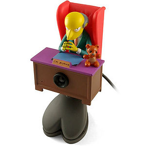
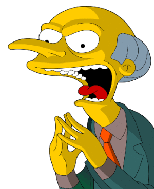
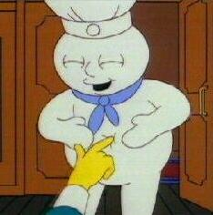
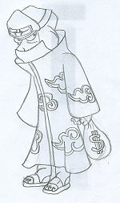

Señor Burns
 De: La Frikipedia, la enciclopedia extremadamente seria.
De: La Frikipedia, la enciclopedia extremadamente seria.
De la serie grandes personajes:
| Nacimiento
|
5 minutos después de que crearan al Demonio
|
| Muerte
|
¡Nunca!
|
| Ocupación
|
Dirigir la central nucelar de Springfield en su camino hacia dominar el mundo
|
| Nacionalidad
|
Infierno
|
| Malo o bueno
|
Es el diablo con dinero
|
| Atentados contra la humanidad
|
Resumiendo: Nacer
|
| Religión
|
Satánica
|
| Notas
|
¡Excelente!
|
«¿Quién es este hombre?»
~ Burns cuando ve a Homer Simpson
«¿Tiene alguien cambio de un botón?»
~ Burns dando un botón como limosna a Los Simpson en un ataque de locura
«Excelente...»
~ Burns diciendo "Execelente"
El Señor Burns, más conocido como Montgomery Burns o simplemente Monty Burns, es un ser vil y despiadado de tropecientos septillones de años, el cual el muy capullo malo dejó a su familia biológica para hacerse rico y empezar su plan de dominación mundial. Se pasa el día en el sillón de despacho despidiendo personal como quien se ventila un berberecho mientras conspira para llegar a la presidencia de Estados Unidos y así dominar el mundo. Se dice que tiene 104 años.
Hechos de su miserable vida
 Burns conspirando en su lugar favorito
- Ya cuando era un bebé desarrolló sus malvadas artes, arrebatándole el biberón a su hermano.
- También cuando era un bebé despidió a la criada por no darle como el quería el biberón.
- Dejó tullido con un coche de choque a un
borracho irlandés mientras éste pintaba la atracción.
- En el cole le robaba los lápices a su compañero de pupitre (y también los exámenes al profe, y así aprobaba).
- Ha sido agredido varias veces por Homer Simpson (la mayoría por no saber cómo se llama), pero a pesar de esto y de la incompetencia de su subordinado, este sigue cobrando.
- No supo el nombre de Homer Simpson ni siquiera cuando le pilló pintando un grafitti que ponía "Soy Homer Simpson".
- Fue capaz de encontrar El monstruo del Lago Ness.
- Aún no ha muerto a pesar de sus vaya usté a sabé cuántos años y de ser el hombre más enfermo y enfermizo del mundo y de estar más flojo que el pelo del Calvo de Antena 3.
- Le encanta despedirte echándote por una trampilla y/o soltarte a los perros.
- No pudo quitarle un caramelo a un bebé (Maggie Simpson) y acto seguido le disparó, causando una conmoción a todo el pueblo de Springfield para que buscasen al culpable del disparo.
- Vertía los residuos de su central en el patio de un colegio hasta que, para disimular tanto niño calvo, cambió su vertedero a un parque.
- Prometió donar un millón de dólares al Orfanato cuando los cerdos volaran. Cuando pasó un cerdo volando, desistió [1].
- Es tal su fortuna que
el muy c%@**#$ se puede permitir divertirse creando negocios de m@&*#a extravagantes, como patrocinar a la iglesia de Springfield.
Enemigos
 Burns haciendo su cara más amable
Aliados
 Poppy Fresco, uno de sus más acérrimos aliados
Amantes
Waylon Smithers es su único amante, ya que según la teoría de 123 Gña y de la relaescubedad hay un 0,000000000000000...% de probabilidades de que alguien más le quiera o lo aprecie (o sea, nadie). Y a pesar de eso, Burns no le hace ni puto caso a Smithers (que, por si no lo habéis pillado, es gay y sueña cada noche con un Burns con alas entrando por la ventana de su dormitorio). A continuación viene un conocido diálogo entre estos dos personajes:
 ¿Adivinen quién era
Kakuzu de
Batas Nubladas S.A.?, ¡NADA MAS NI NADA MENOS QUE BURNS DISFRAZADO! (ya se nos hacía familiar tanta avaricia...)
- Burns: "Paparruchas, a nadie le gustan los perros, ¿qué dirías si entrara en tu casa y empezara a babearte la entrepierna?"
- Smithers: "¿Si fuera usted, señor?"
Su otra vida
Smithers intentando seducir a Burns
El señor Burns llevó una doble vida durante unos cuantos años, ocupando la presidencia del Furbo Clus Bar Felona bajo el seudónimo de Joan Gaspart. Durante los tres años que detentó dicho cargo consiguió forrarse (sí, más aún) a costa del club catalán en uno más de sus planes para dominar el mundo (¿Habíamos dicho ya que ese es su máximo objetivo?). Algunos dicen que actualmente también está al mando de un club de fútbol escondido en la figura de un tal Florentino Pérez. Burns planea devolver a este equipo a su antigua gloria para ganar más (sí, no se conforma) dinero.
¿Sabías que...?
- Burns cría buitres carroñeros y monos con alas de murciélago?
- Burns organiza cacerías... de humanos?
- La revista Forbes calcula que su fortuna ronda los 16,8 mil millones de dólares?
- Su cumpleaños es el 15 de septiembre [2]?
- Homer Simpson le escribió "Es usted una senil y dentuda momia con brazos de nena raquítica y que siempre huele a culo de elefante"?
- En realidad, construye misiles intercontinentales en su central nuclear para destruir otros países y dominar el mundo?
- No se cansa de aumentar su fortuna a costa de los demás?
- Es uno de los mayores malvados de la historia?
- Y encima, es inmortal?
- Burns mantiene un torrido romance con el Calvo de Antena 3?
- Es amigo de Flanders?
- Smithers sabe lo que le excita?
- La compota de higos es suya?
Véase también
Autor(es):
- Fordus
- Conan
- Pakirri
- AlemanH
- Veni Vidi Vici
- Elorinoco
- JoitaBandana
- Bladguer
- Il alternati
- LordAlfonso
Frikipedia 2005-2016, Licencia
GFDL 1.2 - Extraído por FrikiLeaks
![[2]](http://s2.subirimagenes.com/otros/11236915x04-bobo0039521111.jpg){kind=link}